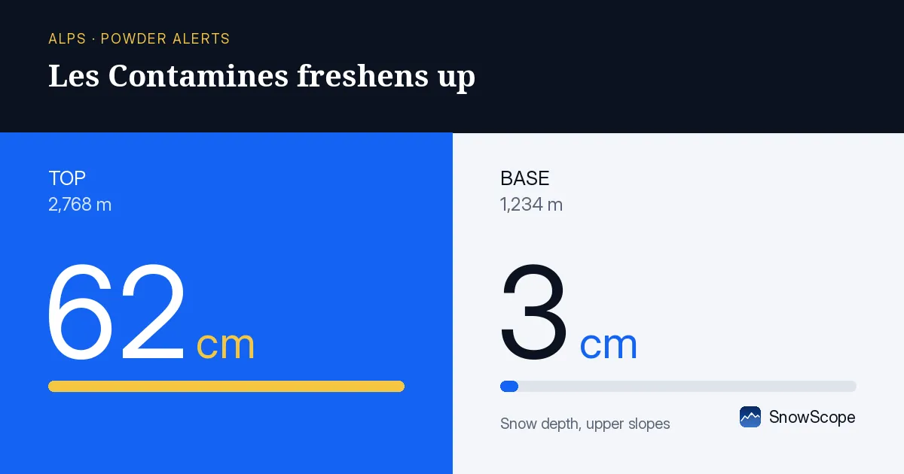
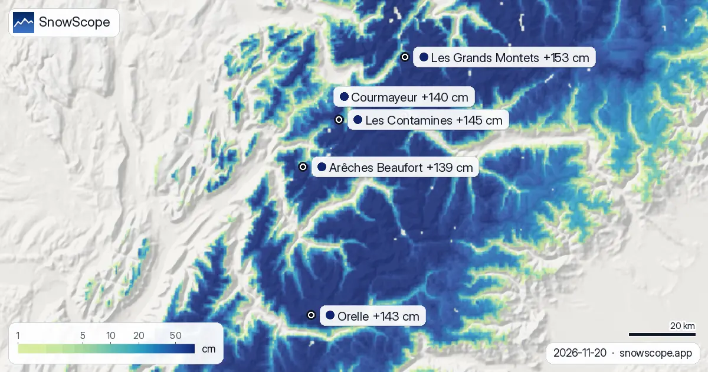
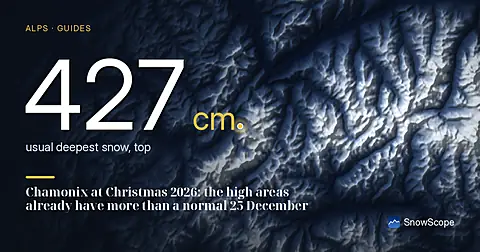

Les Contamines freshens up: 145 cm of new snow in three days (Alps, 20 November)
Les Contamines caught the heaviest snow event of the past three days, building its upper slopes to 115 cm. Across the Alps, 874 resorts now have snow cover after a surge that added 27,000 km² of white ground in 48 hours.
See the live snow forecast for Les Contamines in the SnowScope appSnow depth, powder alerts and the 3D map, free.
Which resorts got the most?
Les Contamines led the region with 145 cm of new snow in three days. Nearby, Orelle picked up 143 cm and Courmayeur 140 cm. All three sit at good height: 2,444 m, 3,221 m and 2,749 m respectively, so the powder stayed cold.
On 20 November, SnowScope shows 77,180 km² of the Alps under snow, spread across 874 resorts. That is a jump of 26,680 km² in just two days.
| Resort | Snow depth | New snow, 72 h | Coming, next days | Top |
|---|---|---|---|---|
| Les Grands Montets | 95 cm | 153 cm | 87 cm | 2,768 m |
| Les Contamines | 115 cm | 145 cm | 89 cm | 2,444 m |
| Orelle | 145 cm | 143 cm | 92 cm | 3,221 m |
| Courmayeur | 126 cm | 140 cm | 80 cm | 2,749 m |
| Arêches Beaufort | 111 cm | 139 cm | 102 cm | 2,319 m |

Upper slopes and what to expect at height
At Les Contamines, the top of the mountain (2,444 m) now holds about 50 cm. The mid-mountain (1,801 m) has 30 cm, more than is normal for late November by half: past winters show an average of 20 cm on this date.
The base at 1,158 m is thin at 4 cm, so lower runs will stay patchy until more snow reaches that altitude. Focus your day on the upper lifts where the depth and freshness are both waiting.
When the next powder arrives
Saturday 21 November will be quiet at 7 cm added, but Sunday 22 November brings 63 cm. Monday 23 November adds another 19 cm. By then Les Contamines will hold roughly 89 cm more snow than it does now.
Wind and sun between snow events can soften what fell, so timing matters. Light powder stays best in shade and on north-facing slopes; south-facing runs can turn to crust by mid-morning once the sun climbs.
The freezing level and what it means for your run
On Saturday 21 November the freezing level—the height where snow turns to rain—sits between 1,680 m and 2,850 m at Les Contamines. By Sunday it drops to 1,370–2,890 m; on Monday it falls to 1,370–2,450 m. These wide swings mean the base of the mountain may see rain mixed in with snow on the warmest part of each day.
Rain on new snow can bond layers and build stability, or it can weaken the snowpack depending on how deep it soaks. Fresh powder above 2,000 m will stay clean the longest.
How this winter is shaping up
At 1,801 m, Les Contamines now has 30 cm. In past winters on this date, the same height usually held 20 cm. SnowScope shows that only 15 of the past 46 late Novembers have been deeper, so this season is off to a strong start, though early depth does not guarantee a heavy winter ahead.
The region as a whole will reach 1,040 resorts with snow cover by 23 November, up from 874 today. The snow-covered area should grow to 100,870 km².
On the ground: what the weather stations saw
Three mountain stations give a snapshot of real depth on 20 November. Tsanfleuron (2,569 m) measured 74 cm with 34 cm new in 24 hours. Hohe Munde Gipfel (2,580 m) recorded 62 cm, of which 40 cm fell in one day. At lower height, Daone (Malga Bissina, 1,785 m), the total was 45 cm, nearly all from the last 24 hours.
These exact measurements show the spread of snow by altitude and confirm the estimates for resorts near them.
Tips for skiers
- Ski the upper north-facing slopes first thing Sunday morning to find the softest new powder before wind and sun change it.
- Check the official avalanche bulletin before any off-piste run, especially on steep slopes where fresh snow sits on old layers.
- On the busiest weekend days, ride lifts early and descend by mid-morning before afternoon rain risk rises the lower you go.
- Avoid lower runs (below 1,800 m) until more snow reaches them; thin cover over grass and rocks makes for poor skiing and damage to equipment.
- Turn on the SnowScope powder alert for Les Contamines to get a note when the next big snow day approaches.
About these numbers
Resort snow depths are the deepest snow on the resort's upper slopes on the date shown; they are estimates for an area, not a measurement at one point. Forecasts can change. Always read the official avalanche bulletin before going off-piste.
Official avalanche bulletins: EAWS (Alps)
Cite this report
For research, teaching or the press: the numbers and charts are free to reuse under CC BY 4.0 with this citation.
SnowScope (2026), Les Contamines freshens up: 145 cm of new snow in three days (Alps, 20 November), https://snowscope.app/blog/en/2026/11/alps-les-contamines-fresh-snow-powder-alert-20-november-2026.html, accessed 2026-11-20
SnowScope (Atlas Labs). (2026, November 20). Les Contamines freshens up: 145 cm of new snow in three days (Alps, 20 November). SnowScope snow reports. https://snowscope.app/blog/en/2026/11/alps-les-contamines-fresh-snow-powder-alert-20-november-2026.html
BibTeX
@misc{snowscope2026alpslescontaminesfreshsn,
author = {{SnowScope (Atlas Labs)}},
title = {Les Contamines freshens up: 145 cm of new snow in three days (Alps, 20 November)},
year = {2026},
month = nov,
howpublished = {\url{https://snowscope.app/blog/en/2026/11/alps-les-contamines-fresh-snow-powder-alert-20-november-2026.html}},
note = {Published 2026-11-21 11:39 UTC; accessed 2026-11-20}
}· CC BY 4.0 · Methods, data and tools →
Les Contamines: snow and temperature by height, this winter vs last (tools) →
Follow Les Contamines
Free: a message when fresh snow is coming, and the forecast every morning.
More snow reports

Can a cautious first-timer trust Courmayeur in December when mid-mountain averages 60 cm of snow across our past winters?

Snow depth in Chamonix on 27 November, Christmas odds from 46 winters at the Grands Montets and Brévent, and why the valley floor is a different story.

Snow depth in Chamonix on 13 November 2026, height by height: nothing on the valley floor, 1 cm at 2001 m, 12 cm at the top of Brévent-Flégère (2486 m), 5 to 24 cm at the top of the Grands Montets (2768 m). About a metre forecast up high this week, rain in the valley. How deep Chamonix usually gets, from 46 winters.